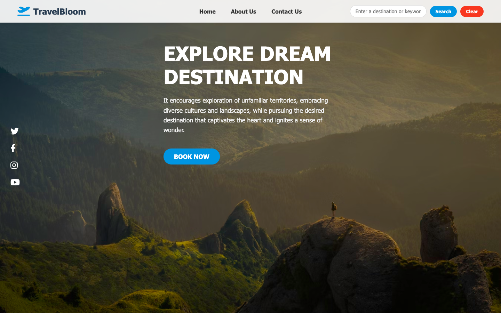

TravelBloom - Travel Recommendation Project
TravelBloom es un proyecto resalizado en el curso Full-Stack JavaScript, simula una aplicación web de recomendaciones de viajes que permite a los usuarios explorar destinos turísticos alrededor del mundo.